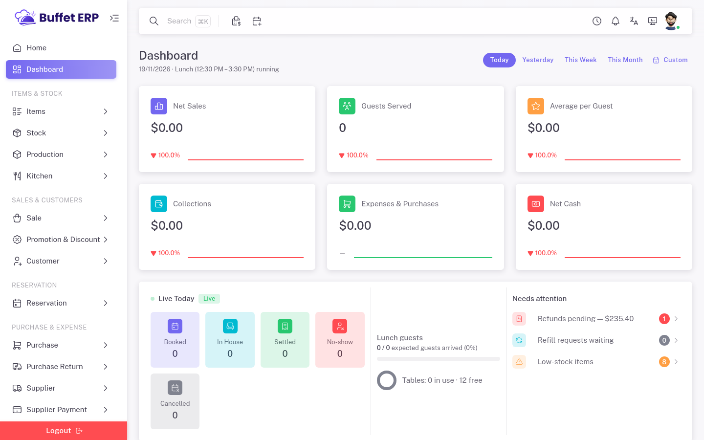
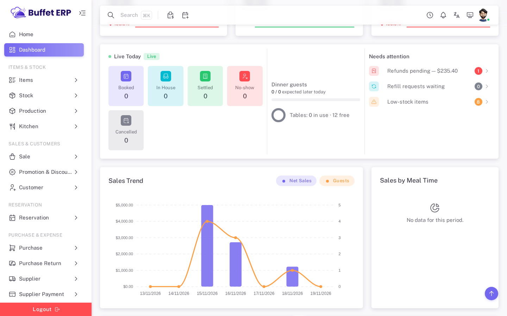
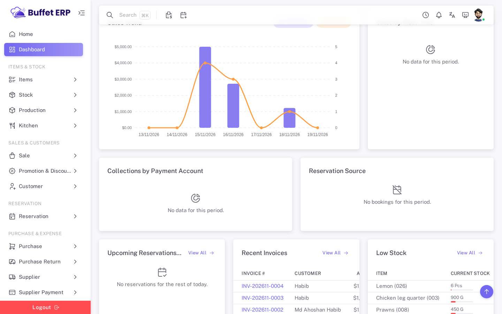

Dashboard & Live Status
Read the sales cards, Live Today, Needs attention and the sales trend.
Before you start
Open Dashboard from the top of the side menu. Under the title you see today's date and the meal time that is running.
Top
Choose the period
The buttons at the top right set the period for the cards and charts: Today, Yesterday, This Week, This Month or Custom. Custom shows Date From and Date To.
Cards
The six summary cards
| Card | What it shows for the chosen period |
|---|---|
| Net Sales | Sales from settled bills. |
| Guests Served | Number of guests billed. |
| Average per Guest | Net sales divided by guests served. |
| Collections | Money received from customers. |
| Expenses & Purchases | Money spent on expenses and purchases. Lower is better, so a fall shows in green. |
| Net Cash | Money in minus money out. |
The percentage on each card is the change compared with the period before (for example, today compared with yesterday). Green is good, red is not.

Live
Live Today and Needs attention
Live Today counts today's bookings for the running meal time:
- Booked, In House (checked in, still dining), Settled, No-show and Cancelled.
- The meal time's guests: how many expected guests have arrived.
- Tables: how many are in use and how many are free.
Needs attention lists work waiting for someone: Refunds pending (with the amount), Refill requests waiting and Low-stock items. Click a line to open that page.

Charts
Charts and lists
- Sales Trend: one point per day of the chosen period. Use the Net Sales and Guests buttons to show or hide each line.
- Sales by Meal Time, Collections by Payment Account and Reservation Source.
- Upcoming Reservations Today, Recent Invoices and Low Stock, each with View All.
